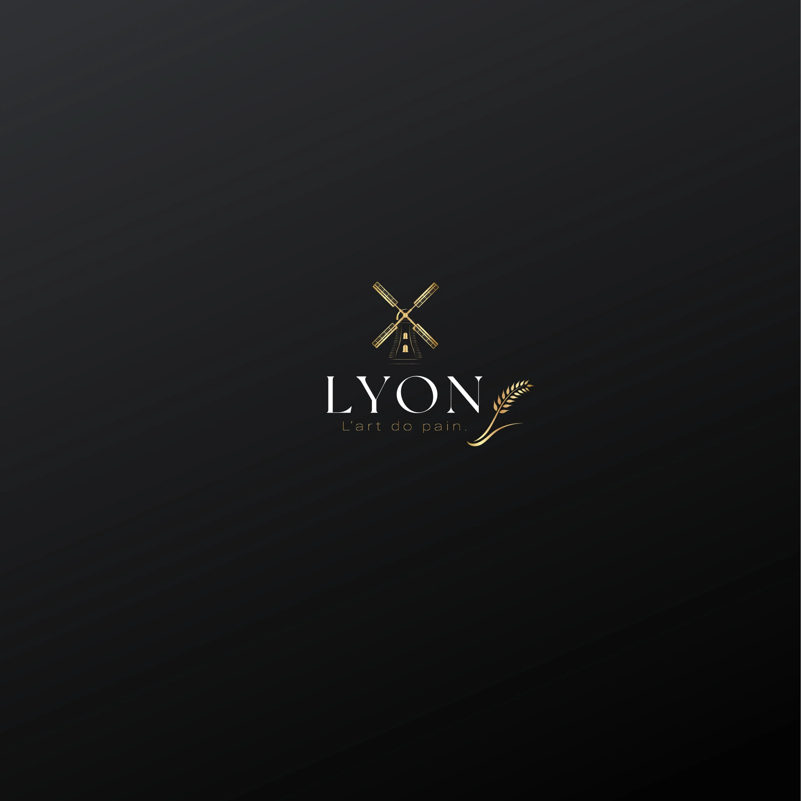

Bienvenidos a Lyon Bakery
Cocina saludable, consciente y adaptada a tus necesidades

Encuentranos
$ 70.000 - 80.000 · por persona
"Excelente el servicio, la comida y la presentación para las fiestas y reuniones me encanto 10 de 10 súper recomendada para tus eventos y ocasiones especiales"
"Muy linda persona la chef 👩🏻🍳, la comida es deliciosa, todo súper bien"
"Una grata experiencia. La comida exquisita y el servicio, el mejor!!!"
"Sencillamente delicioso, cada bocado es una nueva experiencia al paladar"
Quienes somos
En Lyon Bakery somos una cocina oculta dedicada a crear experiencias gastronomicas saludables, deliciosas y responsables. Elaboramos todos nuestros productos sin conservantes ni colorantes artificiales, utilizando procesos de ultracongelado y empaque al vacio que garantizan frescura, sabor y calidad nutricional.
Nos especializamos en brindar soluciones alimentarias practicas y conscientes, adaptadas a diferentes estilos de vida, condiciones de salud y necesidades personales o empresariales.
Nuestra Historia
Lyon nace como un sueno en 2007 y toma forma en 2017 impulsado por algo profundamente personal: nuestra hija Dariana participo en un estudio medico en Madrid que revelo que su estabilidad de salud se debia directamente a una alimentacion natural, casera y libre de quimicos desde pequena.
Nuestra Mision
Transformar vidas a traves de una alimentacion consciente, natural y saludable. Cocinamos con proposito, usando ingredientes reales y elaborados con amor para cuidar a toda la familia. Mas que una empresa, somos una familia que cocina con proposito y sirve con el corazon.
Vision
Referente de alimentacion consciente en Cali.
- 100+ familias impactadas
- Programa "Comer para vivir bien"
Marca inspiradora en Colombia.
- Presencia en 2+ ciudades
- 1.000+ familias impactadas
Un legado que trasciende fronteras.
- 10.000+ vidas transformadas
- Fundacion Lyon activa
Valores de Lyon
Manifiesto Lyon
"Aqui no venimos solo a cocinar, venimos a transformar vidas."
Alimentar con amor es un acto revolucionario. La verdadera abundancia esta en compartir lo que nutre de verdad. Sin quimicos, sin atajos, sin culpa. Solo ingredientes reales y decisiones conscientes.
Lyon no es solo una cocina. Es un movimiento.